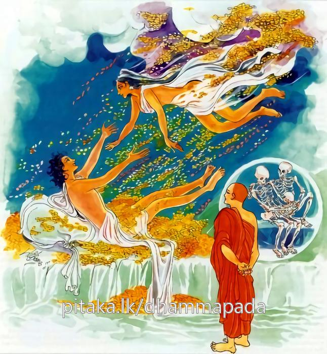
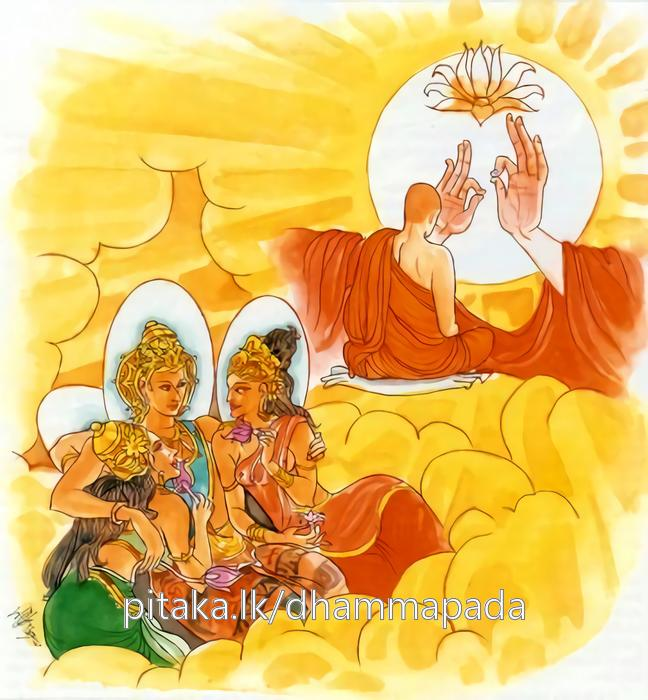

14-5 උකටලී භික්ෂුව පිළිබඳ කථා පුවත
මෙම කතාව සද්ධර්ම සාගරයෙන් ද කියවන්න.
න කහාපණවස්සෙන තිත්ති කාමෙසු විජ්ජති
අප්පස්සාදා දුඛා කාමා ඉති විඤ්ඤාය පණ්ඩිතො.
කහවණු වැස්සෙනුදු (අහස බලා අත පොළාපු කල්හි දොළොස් යොත්නක් තන්හි හිනක් පමණ වස්නා සත් රුවන් වැස්සෙනුදු) වස්තුකාම ක්ලේශකාමයෙහි තෘප්තියෙක් නො වේ. වස්තුකාමක්ලේශකාමයෝ (සිහිනෙන් පූ පැනක් මෙන්) අස්වාද රහිතයහ. බොහෝ දුක් ඇත්තාහ. නුවණැති මහණ තෙම (කාමයෝ ආස්වාද රහිතයහ. බොහෝ දුක් ඇත්තාහ යි) මෙසේ දැන,

අපි දිබ්බෙසු කාමෙසු රතිං සො නාධිගච්ඡති
තණ්හක්ඛයරතො හොති සම්මාසම්බුද්ධසාවකො.
(මානුෂක කාමයන් තබා) දිව්ය වූ පංචකාමයෙහි ද ඒ නුවණැති මහණ තෙම ඇල්මකට නො පැමිණෙන්නේ ය. සම්යක්සම්බුද්ධශ්රාවක තෙම (තෘෂ්ණාවගේ ක්ෂයාන්තයෙහි උපන් හෙයින් තෘෂ්ණාක්ෂය නම් වූ) රහත්පලෙහි ද (තෘෂ්ණක්ෂයට නිමිති වූ හෙයින් තෘෂ්ණාක්ෂය නම් වූ) නිර්වාණයෙහි ද ඇලෙන්නේ ය. (එය පතමින් කැමැති වැ වසන්නේ ය)

"න කහාපන වස්සෙන ” යන මේ ධර්මදේශනය ශාස්තෲන් වහන්සේ දෙව්රම වැඩසිටියදී එක් උකටලී වූ භික්ෂුවක් නිමිති කරගෙන දේශනා කළහ. ඔහු ශාසනයේ පැවිදි වී උපසම්පදා වී අසවල් තැනට ගොස් ඉගෙන ගන්නැයි උපධ්යායන් විසින් යවන ලද්දේ එතැනට ගියේය. ඉක්බිති පියාට රෝගයක් ඇතිවිය. ඔහු පුතා දකිනු කැමතිව ඔහුව කැඳවීමට සමත් කිසිවෙක් නොලැබ දරුදුකින් හඬමින් ම මරණාසන්න වී මෙය මගේ පුතාට පාසිවුරු ගැනීමට යොදන්නයි කහවණු සියයක් බාල දරුවා අත තබා කළුරිය කළේය. ඔහු වැඩිමල් සහෝදර භික්ෂුව පැමිණි විට පාමුල වැටී පෙරළී අඩා ස්වාමීනි අපේ පියා වැළපෙමින් ම මියගියේ ය. මා අත ඔහු විසින් කහවණු සියයක් අතේ තබන ලදි. ඉන් කුමක් කරන්නේදැයි විමසීය. දහර භික්ෂුව මට කහවණුවලින් අර්ථයක් නැතැයි ප්රතික්ෂේප කර පසුව සිතුවේය. මම මෙලෙස අනුන්ගේ ගෙදොර පිඬු පිණිස ගොස් ජිවත් වීමෙන් වැඩක් වේද? මේ කහවණු සියයෙන් ජීවත් විය හැකිදැයි විමතියට පත්ව ඔහු අනභිරතියෙන් පෙළී විසිරුණු ඉගෙනීම් බණදහම් කීම්, කමටහන් වැඩිම් ආදියෙහිදී, පාණ්ඩු රෝගියෙකු ලෙස සුදුමැලි විය. අනතුරුව කුඩා සාමණේරවරු මෙසේ වැහැරුනේ කුමක් නිසාදැයි විමසා උකටලී වුයෙමි යි කීවිට ආචාර්ය උපාධ්යයන්ට දැනුම් දුන්හ. ඉක්බිති ඒ ගුරුවරු ඔහු බුදුන් වෙත කැඳවාගෙන ගොස් බුදුන් දැක්වූහ. බුදුහු ඔබ උකටලීව සිටීම සැබෑදැයි විමසුහ. ඇත්තයයි පැවසුවිට ඔබ එලෙස කිරිමට හේතුව කුමක්ද? ඔබට ජීවත් වීමට කිසිවක් ඇත්දැයි විමසුවිට ස්වාමීනි ඇත. ඔබට තිබෙන්නේ කුමක්ද? ස්වාමීනි කහවණු සියයක් එසේ නම් එක්තැනකින් ගල්කැට ටිකක් අරගෙන එන්න. ගණනය කර දැනගනිමු මේ කහවණු සියයෙන් ජීවත්විය හැකිද නොහැකිද යන්න සොයා බලමු. පරිභෝගය සඳහා පනහක් වෙන්කරන්න. දෙගුණයක් ගොනුන් මිළදී ගැනීමට වෙන්කරන්න. විසි හතරක් බීජ ගැනීමට වෙන්කරන්න. විස වියගස් නගුල් සඳහා වෙන්කරන්න. උදළු වෑ පොරෝ සඳහා වෙන් කරනවිට මෙලෙසට වියදම් ගණනය කරනවිට කහවණු සියය ප්රමාණවත් නොවේ. අනතුරුව බුදුහු මහණ ! ඔබගේ කහවණු ස්වල්පය කෙසේ නම් තෘෂ්ණාව පුරන්නේද? අතීතයේ දි සක්විති රාජ්යය කර අත්පුඩි ගැසීම් පමණකින් යොදුන් දොළසක් දුර උකුළ ප්රමාණයට රන් වර්ෂා වැස්සවීමට සමර්ථ වු සක්විති රජු. සක්විති රජකමට වඩා ශක්ර සම්පත් උතුමැයි සිතා, ශක්රයාව ඉපිද, සතියක් ශක්රයගේ ආයු කාලය කලක් දේවරාජ්යය කර මරණ අවස්ථාවේදී තණ්හාව සම්පුර්ණ නොකරම කළුරිය කළේයයි පවසා ඔහුගේ ඉල්ලීම අනුව අතීත මහාමන්ධාතු ජාතකය විස්තර කර පැවසීය. යම්තාක් සඳ හිරු දෙදෙනා දිසාවන්හි පැතිර බබළයිද ඒසා විශාල ප්රදේශයක සියළු ප්රාණීහු දාසයෝ වුහ.
මෙයින් අනතුරුව ගාථා දෙකක් පැවසුහ. කහවණු වැස්සෙන් ද කාමයන්හි තෘප්තියක් ඇති නොවේ. කාමයෝ මද සැප ඇතියෝය. බොහෝ දුක් ඇත්තෝය. නුවණැත්තෝ මෙසේ දැනගෙන දිව්ය කාම සම්පත්තීන්හි ද ඇල්මකට නොපැමිණ, බුද්ධ ශ්රාවක තෙමේ නිවනෙහි ඇලුණෙක් වේ.
මිනිසකු සිතෙහි ඇති වන වස්තු කාමය
වැස්සන් සත් රුවන් ඉන් ඇති නොවේමය
පස්කම් සැපත නම් මද සුව ගෙනේමය
බුදුබණ දහම පිළිපැදි අය තිවේමය
න කහපණ වස්සේන - එහි කහාපණ වස්සේන යනු - හෙතෙමේ අපොළසන් ගසා සරුවැස්සක් වසවයි එය කහවණු වැස්සක් යයි කියයි ඒ විසින්ද වස්තුකාම ක්ලේශ කාමයෙන් තෘප්තියක් නම් නොවීය. තෘෂ්ණාව පිරීම අපහසුය. අප්පස්සාදා යනු සිහින හා සමාන අල්ප සුවයකි. දුක්ඛා යනු දුක්ඛක්ඛාන්ධ ආදියේ ආවාවු දුක් ලෙස දක්වන බොහෝ දුක් වේ ඉති විඤ්ඤායා යනු මෙලෙස කාමය දැන අපි දිබ්බෙසු යනු යම්සේ දෙවියන් පිළිබඳ ලබන කාමයන්හි ආරාධනයක් ඇත ද ආයුෂ්මත් සමිද්ධි තෙරුන් මෙන් ඒ කාමච්ඡන්දයන්හිද රතියක් ඇල්මක් නැත නො විඳින්මය.
"තණ්හක්ඛයරතො "
තෘෂ්ණා ක්ෂය කිරීමේ රතිය නම් අර්හත්වයේ මෙන්ම නිවනේද? ඇලුනේ එය පතමින් වාසය කරයි. සම්මාසම්බුද්ධ සාවකො සම්මා සම්බුද්ධයන් වහන්සේ විසින් දේශිත ධර්මය ඇසීමෙන් බිහිවූ යෝගාවචර භික්ෂුවයි.
දේශනය අවසන ඒ භික්ෂුව සෝවාන් ඵලයේ පිහිටියේය. පැමිණි පිරිසටද එම දෙසුම සාර්ථක විය.